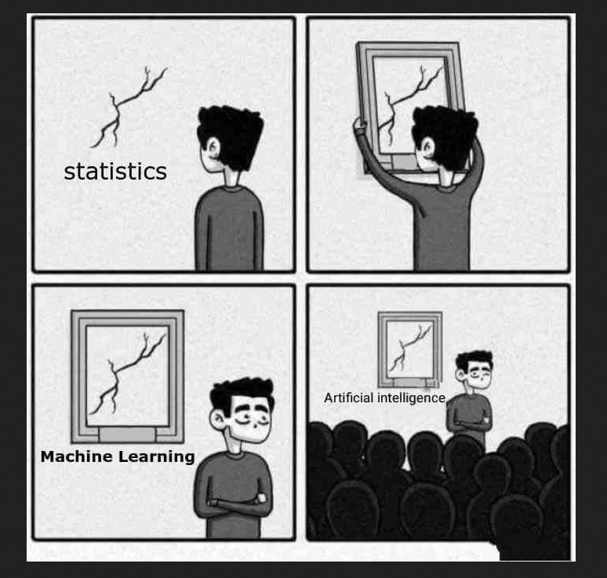
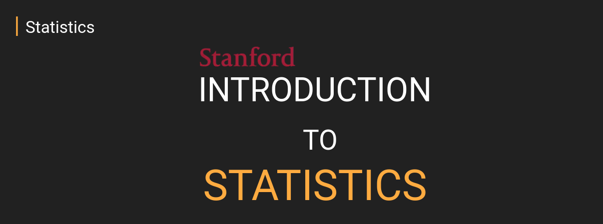
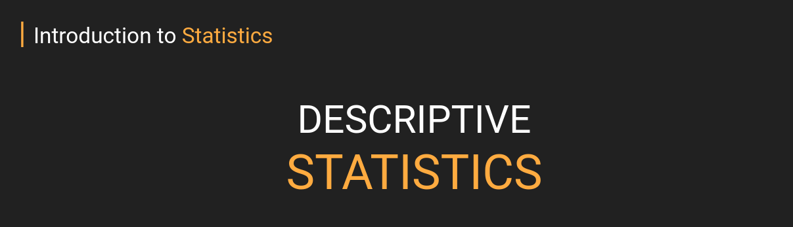
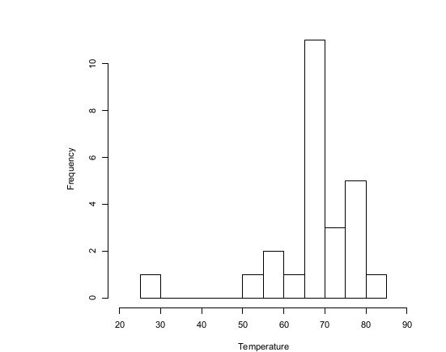

Statistics
Why statistics matters for machine learning, what it is, and a module-by-module curriculum from descriptive statistics to probability, distributions and sampling.
The ground floor under machine learning: what statistics is, why it is worth learning, and a module-by-module curriculum from descriptive statistics to probability and distributions.
You can call a model without knowing any statistics. You cannot tell whether to trust it. Read the intro below, then jump to the curriculum in the table of contents.
See also: Probability & Statistics, One Sip at a Time, a story-driven series on the same ground with interactive labs.
Many enthusiastic people who love to have a great challenge, jump to the unbounded realm of AI, and get amazed by its titles like machine learning, deep learning, architecture, and other words related to this field. But what they don't know is that, the real challenge if where all of this came from?

Table of Content
- Statistics
- Table of Content
- What is Statistics?
- Key Aspects of Statistics
- Why to Learn it?
- How to get started?
- Curriculum
- Introduction to Statistics
- Module 1 - Introduction and Descriptive Statistics for Exploring Data
- Descriptive Statistics
- Why are Descriptive Statistics important?
- Numerical Summary Measures
- Descriptive Statistics
- Module 2 - Producing Data and Sampling
- Simple Random Sampling and other Sampling Plans
- Randomized Controlled Experiments and Observation Studies
- Module 3 - Probability
- Four Basic Rules
- Conditional Probability and Bayes' Rule
- Examples and Case Studies
- Module 4 - Normal Approximation and Binomial Distribution
- The Normal Approximation
- Binomial Distributions
- Module 5 - Sampling Distributions and Central Limit Theorem
- The Expected Value, Standard Error, and Sampling Distribution of a Statistic
- The Law of Large Numbers and the Central Limit Theorem
- Module 6 - Regression
- Correlation
- Inference in Regression
- Residuals
- Module 7 - Confidence Interval
- Confidence Intervals via the Central Limit Theorem
- Module 8 - Tests of Significance
- Test Statistics and P-Values
- More on Testing
- Comparing Two Populations
- Module 9 - Resampling
- The Monte Carlo Method
- The Bootstrap
- More About the Bootstrap
- Module 10 - Analysis of categorical Data
- The Chi-Square Test for Goodness of Fit
- The Chi-Square Test for Homogeneity and Independence
- Module 11 - One-Way Analysis of Variance (ANOVA)
- The Analysis of Variance F-Test
- Module 12 - Mutiple Comparisons
- Accounting for Multiple Comparisons
- Module 1 - Introduction and Descriptive Statistics for Exploring Data
- Credits
What is Statistics?
The field of statistics is a branch of mathematics that deals with the collection, analysis, interpretation, presentation, and organization of data. It involves the use of mathematical techniques to summarize and describe data, as well as to draw conclusions and make decisions based on data.
Statistics is a diverse field that encompasses a wide range of topics, including:
| Topic | Description |
|---|---|
| Descriptive statistics | This area of statistics focuses on summarizing and describing the main features of a dataset, such as measures of central tendency (mean, median, mode) and variability (range, variance, standard deviation). |
| Inferential statistics | This area of statistics uses samples of data to make inferences about populations. It includes statistical methods for hypothesis testing, confidence intervals, and regression analysis. |
| Probability | This area of statistics deals with the study of chance events and their likelihood of occurrence. It forms the basis for many statistical methods and models. |
| Data visualization | This area of statistics involves using graphical techniques to represent data in a meaningful and informative way, such as histograms, bar charts, scatter plots, and box plots. |
| Machine learning | This area of statistics involves using algorithms and statistical models to analyze and learn patterns in data, and make predictions or classifications based on those patterns. |
| Time series analysis | This area of statistics deals with the analysis of data that is collected over time, and involves methods for forecasting, trend analysis, and anomaly detection. |
| Bayesian statistics | This area of statistics uses Bayes' theorem to update probabilities based on new data or information, and is particularly useful in situations where prior knowledge or beliefs can be incorporated into the analysis. |
| Computational statistics | This area of statistics involves developing algorithms and computer programs to perform statistical analyses, especially in cases where large datasets are involved. |
| Biostatistics | This area of statistics applies statistical methods to medical and health-related data, and is used in clinical trials, epidemiology, and public health research. |
| Environmental statistics | This area of statistics applies statistical methods to environmental data, and is used in climate change research, ecology, and conservation biology. |
Overall, the field of statistics is essential in today's data-driven world, as it provides powerful tools for extracting insights and making informed decisions based on data.
Key Aspects of Statistics
Statistics provides valuable tools for making data-driven decisions, drawing insights from data, and testing hypotheses in a rigorous and systematic way. It plays a crucial role in research, decision-making, and problem-solving across various domains.
Here are the key aspects of statistics:
| Aspect | Description |
|---|---|
| Data Collection | Statistics begins with the collection of data. Data can be in the form of numbers, measurements, observations, or responses to surveys and experiments. Collecting data can involve various methods, such as surveys, experiments, observations, or mining existing datasets. |
| Data Description | Once data is collected, statistics helps in summarizing and describing it. This includes calculating measures of central tendency (mean, median, mode), measures of dispersion (variance, standard deviation, range), and creating graphical representations like histograms, bar charts, and scatterplots. |
| Data Analysis | Statistical analysis involves using mathematical techniques to make sense of the data. This includes hypothesis testing, regression analysis, and various other statistical tests to draw conclusions and make predictions based on the data. |
| Statistical Inference | Statistical inference is the process of drawing conclusions or making predictions about a population based on a sample of data. It involves estimating population parameters and assessing the uncertainty associated with these estimates. |
| Probability | Probability theory is a fundamental component of statistics. It deals with uncertainty and randomness and provides a framework for understanding and modeling random events and outcomes. |
| Sampling | In many cases, it's not practical or possible to collect data from an entire population. Sampling techniques are used to select a subset of data (a sample) that is representative of the population. Statistical methods are then applied to make inferences about the entire population based on the sample. |
| Experimental Design | In experimental research, statistics helps design experiments, control variables, and analyze results to test hypotheses and draw valid conclusions. |
| Statistical Software | Modern statistics heavily relies on specialized software and programming languages like R, Python (with libraries like NumPy, Pandas, and SciPy), and statistical packages (e.g., SPSS, SAS) to perform data analysis efficiently. |
| Applications | Statistics is used in various fields and applications, including market research, healthcare, finance, quality control, social sciences, and environmental studies, among others. |
| Descriptive vs. Inferential Statistics | Descriptive statistics focus on summarizing and describing data, while inferential statistics involve drawing conclusions and making predictions based on data. |
| Ethics and Bias | Ethical considerations are essential in statistics, as data collection and analysis can impact individuals and society. Researchers must be aware of bias, privacy concerns, and potential ethical dilemmas. |
Why to Learn it?
It is the real challenge to face!!
There are many reasons why learning statistics is important, especially in today's data-driven world. Here are some key points highlighted in the provided context:
| Reason | Highlight |
|---|---|
| Making informed decisions | Statistics helps you analyze data and draw meaningful conclusions, allowing you to make informed decisions based on facts rather than intuition or guesswork. |
| Problem-solving | Statistics has the power to solve complex problems in various fields, including business, science, and society. By understanding statistical concepts, you can better understand the variables involved in a problem and develop effective solutions. |
| Communication | Statistical literacy enables you to communicate complex ideas and results effectively to both technical and non-technical audiences, making it easier for executives and clients to understand the insights derived from data. |
| Career opportunities | Knowledge of statistics is highly valued in the job market, particularly in fields related to data science. Having a strong foundation in statistics can open up new career possibilities and enhance your professional prospects. |
| Versatility | Statistics is applicable in a wide range of industries and domains, from finance and economics to medicine and social sciences. Learning statistics can therefore broaden your horizons and enable you to work in diverse fields. |
| Essential toolkit for data science | Statistics is a fundamental component of data science, and proficiency in statistical analysis is crucial for working with large datasets, identifying trends, and developing predictive models. |
| Low-risk way to test the waters | Online courses and MOOCs offer a low-risk opportunity to explore the field of data science and statistics without committing to a long-term program. |
| Skill up for the future | With the increasing demand for data-driven decision-making, learning statistics can future-proof your career and ensure you remain competitive in the ever-evolving job market. |
| Fills talent gaps | Companies are looking for professionals skilled in statistics and data science to fill talent gaps. By acquiring these skills, you can contribute to solving this problem and enhancing organizational performance. |
| Enhances data storytelling | Statistics helps you present data in a compelling narrative, making it easier for stakeholders to comprehend and act upon the insights gained from data analysis. |
In summary, learning statistics can benefit you in numerous ways, both personally and professionally. It can improve your ability to make informed decisions, enhance your problem-solving skills, increase your earning potential, and prepare you for a successful career in data science.
How to get started?
Studying statistics can be a fascinating and rewarding pursuit, as it involves the use of mathematical techniques to analyze and interpret data. Here are some steps you can take to get started:
| Step | Details |
|---|---|
| Learn the basics | Before diving into statistics, it's important to have a solid understanding of basic math concepts such as algebra, geometry, and calculus. Brush up on these subjects if you need to, or take a refresher course to make sure you have a strong foundation. |
| Take an introductory statistics course | Look for a course that covers the basics of statistical analysis, including probability, descriptive statistics, inferential statistics, and statistical visualization. Many colleges and universities offer introductory statistics courses, or you can find online courses through websites like Coursera, edX, or Khan Academy. |
| Get familiar with statistical software | Statistical software is used to analyze and visualize data, and there are many different programs available. Some popular options include R, Python, Excel, and SPSS. Choose one that interests you and start learning how to use it. |
| Practice with real-world data | Once you have a good grasp of statistical concepts and have learned how to use statistical software, practice applying your skills to real-world data. You can find datasets online or collect your own data from experiments, surveys, or other sources. Use statistical methods to analyze the data and draw conclusions. |
| Read books and articles | There are many great books and articles on statistics that can help deepen your understanding of the subject. Some classic texts include "Statistics in Plain English" by Timothy C. Urdan and "How to Lie with Statistics" by Darrell Huff. Keep up with new developments in the field by reading academic journals or following stats bloggers. |
| Join a community | Connecting with others who share your interest in statistics can be a great way to learn and stay motivated. Look for local meetups, join online forums, or participate in social media groups focused on statistics. |
| Consider further education | If you're serious about becoming an expert in statistics, consider pursuing a degree in statistics or a related field. Many colleges and universities offer undergraduate and graduate degrees in statistics, and there are also online certification programs available. |
| Be Patient and Persistent | Statistics can be complex, but with patience and persistence, you can master it. Take your time to understand each concept before moving on to more advanced topics. |
Remember that learning statistics takes time and practice, so don't get discouraged if it doesn't come easily at first. With persistence and dedication, you can become proficient in this fascinating field.
Curriculum
There are various of books and courses explaining how to study Statistics, but they are all agree on common topics one should study well.
The curriculum in studying statistics typically covers a range of topics, including:
| Topic | Description |
|---|---|
| Introduction to Statistics | This course provides an overview of statistical concepts, methods, and applications. Students learn how to summarize and describe data, visualize data using graphs and plots, and understand basic probability concepts. |
| Probability Theory | This course delves deeper into probability theory, covering topics such as conditional probability, independence, random variables, and probability distributions (Bernoulli, Binomial, Poisson, Normal, etc.). |
| Statistical Methods | This course introduces students to common statistical methods, including hypothesis testing, confidence intervals, and regression analysis. Students learn how to apply these methods to real-world problems and interpret the results. |
| Statistical Analysis | This course focuses on practical data analysis skills, teaching students how to use software packages like R or Python to perform statistical computations and create visualizations. |
| Linear Algebra | This course provides a foundational understanding of linear algebra, which is essential for advanced statistical modeling and machine learning techniques. Topics covered include vector operations, matrix multiplication, eigenvalues, and eigenvectors. |
| Calculus | A course in calculus is often required for statistics majors, as it provides a solid foundation for understanding statistical modeling and inference. Topics covered include limits, derivatives, integrals, and optimization techniques. |
| Experimental Design | This course teaches students how to design and conduct experiments, including randomized controlled trials. Students learn how to identify causality, minimize bias, and optimize experimental designs. |
| Survey Sampling | This course covers the principles and practices of survey sampling, including questionnaire design, sampling frames, and response rates. Students learn how to design surveys that accurately reflect population characteristics. |
| Time Series Analysis | This course introduces students to time series models and their applications in finance, economics, and other fields. Students learn how to model and forecast time series data using ARIMA, SARIMA, and other techniques. |
| Advanced Statistical Modeling | This course builds on earlier statistical methods courses, introducing students to more advanced modeling techniques such as generalized linear models (GLMs), mixed effects models, and Bayesian inference. |
| Data Mining | This course teaches students how to mine and analyze large datasets, including data preprocessing, feature selection, clustering, and classification techniques. |
| Machine Learning | This course introduces students to machine learning algorithms, including supervised and unsupervised learning methods. Students learn how to implement these algorithms using popular libraries like scikit-learn and TensorFlow. |
| Data Visualization | This course focuses on creating clear and effective visualizations of data, teaching students how to use tools like Tableau, Power BI, or D3.js to communicate insights to various audiences. |
| Big Data Analytics | This course covers the challenges and opportunities associated with big data, including distributed computing, data storage, and scalable analytics techniques. Students learn how to work with large datasets using tools like Hadoop, Spark, and NoSQL databases. |
| Ethics in Statistics | This course discusses ethical considerations when working with data, including privacy concerns, data confidentiality, and responsible data sharing practices. |
These courses provide a well-rounded education in statistics, preparing students for careers in data analysis, research, and academia. Elective courses may also be available in specialized areas like biostatistics, computational statistics, or quantitative finance.
Introduction to Statistics

The following illustration is taken from Stanford Statistics Course (see Credit section below), with various illustrations from different sources to facilate and make the illustration simple to study.
Stanford's "Introduction to Statistics" teaches you statistical thinking concepts that are essential for learning from data and communicating insights. By the end of the course, you will be able to perform exploratory data analysis, understand key principles of sampling, and select appropriate tests of significance for multiple contexts. You will gain the foundational skills that prepare you to pursue more advanced topics in statistical thinking and machine learning
Module 1 - Introduction and Descriptive Statistics for Exploring Data
Descriptive Statistics

"It is best to communicate informatio with figures whenever possible rather than numbers"
Descriptive statistics is a branch of statistics that focuses on the methods and techniques used to summarize and describe data. It involves organizing, presenting, and summarizing data in a meaningful and informative way. Descriptive statistics are used to provide a concise overview of data sets, making it easier to understand and interpret the underlying information
Why are Descriptive Statistics important?
"In January 1986, the space shuttle Challenger broke apart shortly after liftoff. The accident was caused by a part that was not designed to fly at the unusually cold temperature of 29◦ F at launch", engineers discussed before the launch.
If we now summerize the numbers of temperatures of the first 25 shuttle missions (in degree F):
- 66,70,69,80,68,67,72,70,70,57,63,70,78,67,53,67,75,70,81,76,79,75,76,58,29
It is not easy to take a closer look at these numbers, you won't easily get the temperatures overview. Unlike if we decided to plot these numbers into a simple bar plot, which will represent the following:

The plot tells us that there are some temperatures values which are below from the common values we have.
So to concolude, The two most important functions of descriptive statistics are:
- Communicate Information.
- Support Reasoning about data.
When data of large size, the exploring of it become essential to use summaries, because there's simply no other way to look at the data or to use the data.
Numerical Summary Measures
Module 2 - Producing Data and Sampling
Simple Random Sampling and other Sampling Plans
Randomized Controlled Experiments and Observation Studies
Module 3 - Probability
Four Basic Rules
Conditional Probability and Bayes' Rule
Examples and Case Studies
Module 4 - Normal Approximation and Binomial Distribution
The Normal Approximation
Binomial Distributions
Module 5 - Sampling Distributions and Central Limit Theorem
The Expected Value, Standard Error, and Sampling Distribution of a Statistic
The Law of Large Numbers and the Central Limit Theorem
Module 6 - Regression
Correlation
Inference in Regression
Residuals
Module 7 - Confidence Interval
Confidence Intervals via the Central Limit Theorem
Module 8 - Tests of Significance
Test Statistics and P-Values
More on Testing
Comparing Two Populations
Module 9 - Resampling
The Monte Carlo Method
The Bootstrap
More About the Bootstrap
Module 10 - Analysis of categorical Data
The Chi-Square Test for Goodness of Fit
The Chi-Square Test for Homogeneity and Independence
Module 11 - One-Way Analysis of Variance (ANOVA)
The Analysis of Variance F-Test
Module 12 - Mutiple Comparisons
Accounting for Multiple Comparisons
Credits
- Coursera Couse : Introduction to Statistics, from Stanford University.